Прошивка для Xteink X4 Classic: каталог манги прямо на читалке, MangaDex и MangaLib без компьютера,
быстрое листание. Рядом остаётся CrossPoint — переключение из меню любой из двух прошивок.
Версия 0.2.3 · CrossPoint 1.6.5-manga3
Нужен Chrome или Edge на компьютере: этот браузер не умеет работать с USB.Страница должна открываться по HTTPS.
Подключи читалку к компьютеру кабелем, который передаёт данные, и включи её.
Нажми «Установить на читалку» и выбери в списке устройство «USB JTAG/serial debug unit».
Подтверди установку. Через минуту читалка перезапустится в PaperManga.
Прочитай перед установкой
Только X4 Classic (ESP32‑S3). Обычный X4 установщик не тронет.
Некоторые читалки из магазинов вроде AliExpress продаются с закрытой прошивкой по USB. Если браузер
не видит устройство, не пытайся обойти блокировку чужими утилитами: можно остаться без рабочей прошивки.
Установщик пишет два слота приложений и выбор слота. Загрузчик, таблицу разделов и заводскую
калибровку экрана (NVS) он не трогает, флеш не стирает.
Книги и настройки на карте остаются. Прошлая прошивка в слоте CrossPoint заменяется нашим форком CrossPoint.
Как это выглядит
Снимки экрана один в один, как их показывает читалка (480×800, четыре оттенка серого). Главы на снимках —
демонстрационные, нарисованные для этой страницы.
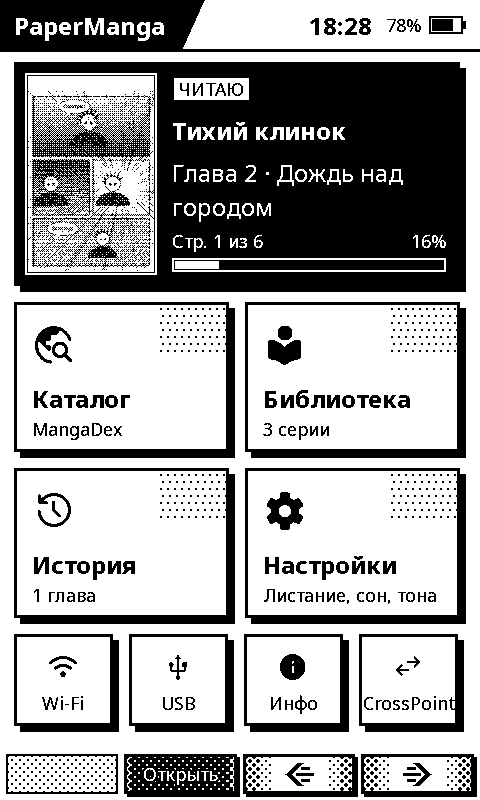
Главный экранПродолжить с той страницы, где остановился.
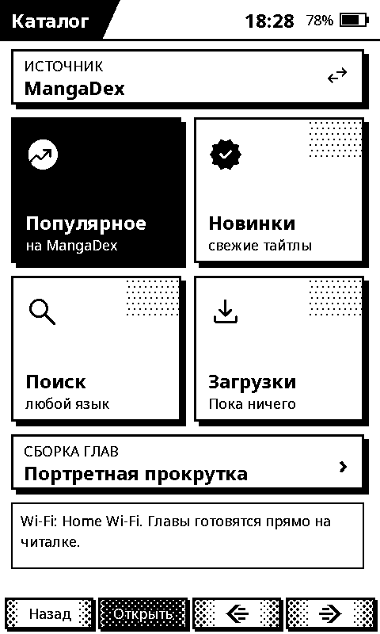
КаталогMangaDex и MangaLib прямо на читалке.
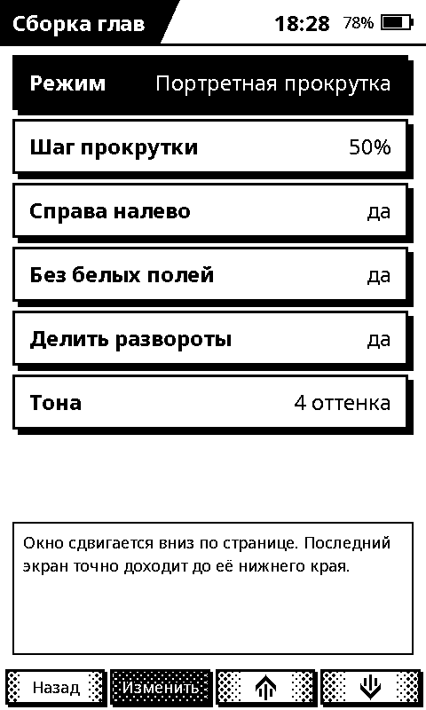
Сборка главРежимы чтения, шаг прокрутки, тона.
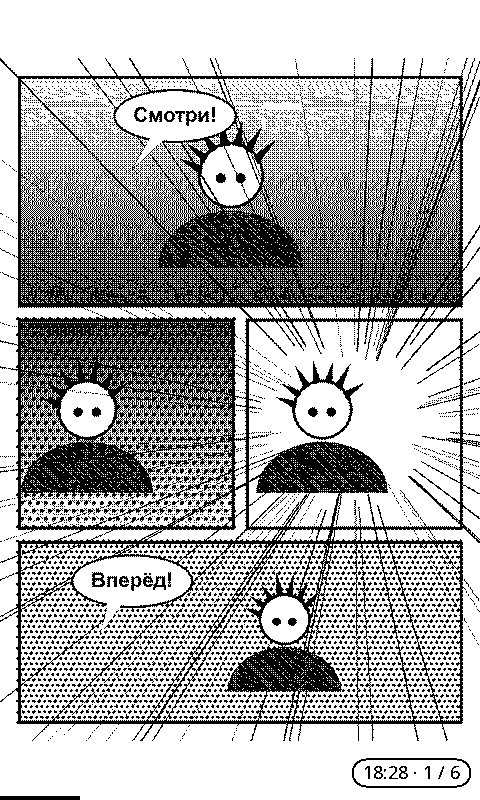
ЧтениеЧасы и номер страницы — по желанию.
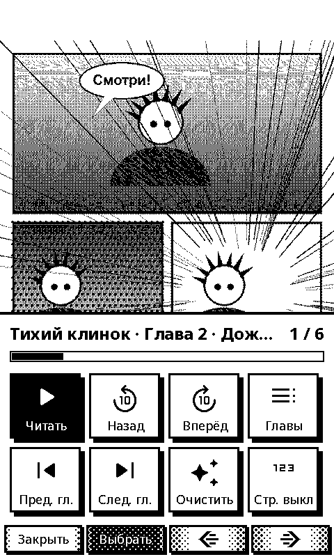
Меню чтенияПеремотка, главы, очистка экрана.
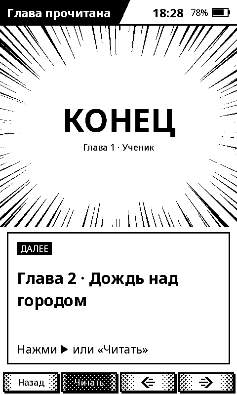
Конец главыСледующая глава — одним нажатием.
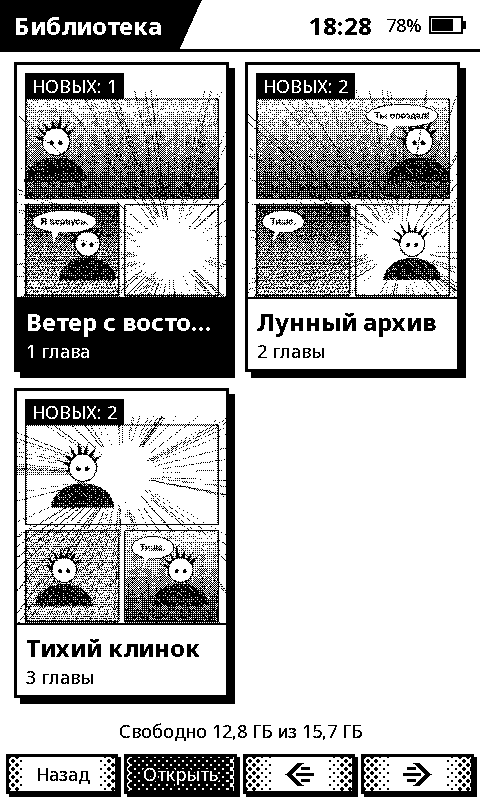
БиблиотекаСколько глав и сколько новых, свободное место.
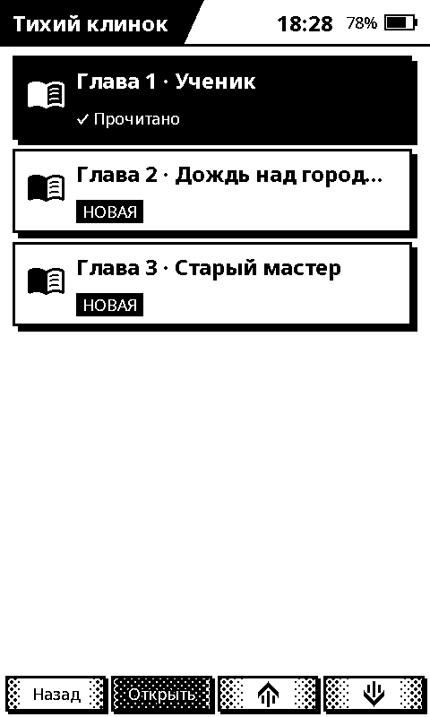
ГлавыПрочитанные, новые, прогресс.
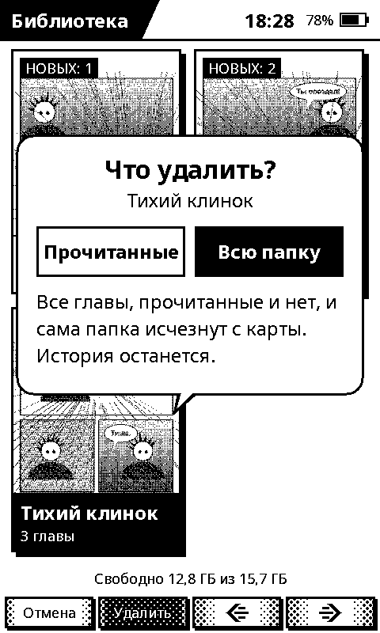
УдалениеТолько прочитанные или всю папку.
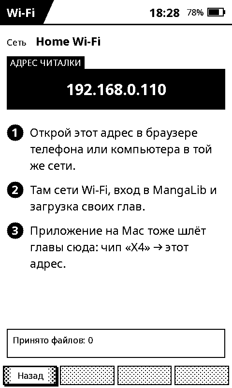
Wi‑FiАдрес читалки: настройки и вход с телефона.
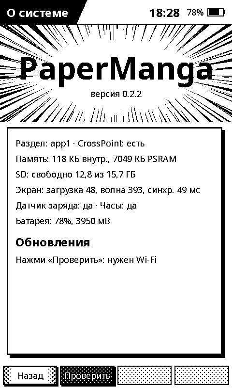
О системеОбновления по Wi‑Fi одной кнопкой.
Что внутри
Каталог на читалке. MangaDex и MangaLib: популярное, новинки, поиск, главы. Читалка сама
скачивает картинки и собирает главу, компьютер не нужен.
Вход в MangaLib для 18+ и глав, скрытых без аккаунта: на странице читалки в браузере.
Режимы чтения как в приложении на Mac: прокрутка, целая страница, альбомный, четыре области,
4 оттенка серого или ч/б.
Несколько сетей Wi‑Fi: читалка подключается к той, что рядом.
Обновления по Wi‑Fi: «О системе» → «Проверить». Прошивки обновляют друг друга.
Вернуть как было
Удерживай «Назад» при включении — загрузится CrossPoint. Стоковую прошивку можно поставить с
crosspointreader.com.
CrossPoint — проект сообщества под лицензией MIT; наш форк добавляет пункт PaperManga
в меню и безопасные обновления. Контент берётся из источников, которые ты сам подключаешь; мы ничего не раздаём.